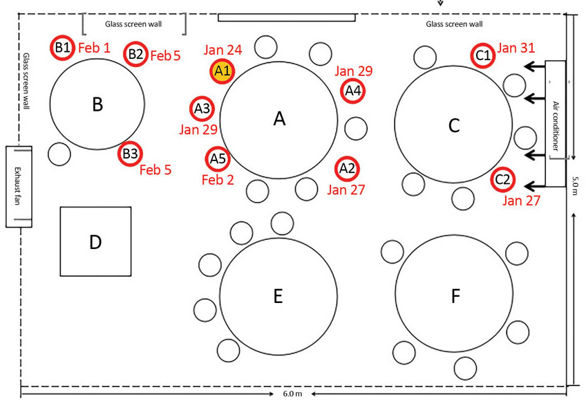

The researchers investigated a specific outbreak of coronavirus involving 10 people, with a clearly defined first patient who had recently returned to Guangzhou from Wuhan, China. The only common exposure event linking all the cases involved a single restaurant where the first patient had lunch with family members. They then determined where people had been seated during that lunch period, and how long people had been exposed to each other. All people who had lunch in the restaurant that day and the following day were tested for COVID-19 and quarantined.
The investigators obtained a detailed record of the different patients involved in the outbreak, including when they developed symptoms and when they were hospitalized. From this, they were able to reconstruct a map of where everyone sat.
{% include hide_details.html %}The researchers took six swabs from the air intake and outflow of the air conditioner. They performed polymerase chain reaction (PCR) tests to look for the virus.
The researchers report that the air conditioner samples themselves actually did not have detectable coronavirus. They did not find any SARS-CoV-2, the virus which causes COVID-19, on any of these surfaces. This could simply be because the swabs were taken too late, but no information is provided on how long after the event these surfaces were tested. This is a weakness because the original patient (A1 in the seating chart below) was seated in the middle of the infected area. If the AC spread the virus to the other tables, it must have recirculated the air and we would expect to find some coronavirus samples on the AC itself.

{% include hide_details.html %}This study found that all of the people who developed coronavirus had been seated fairly close together in a restaurant for lunch on the same day that the first patient developed symptoms, and were along the path of a single air conditioner. They tracked down the different people who were infected, and found out when they developed symptoms and entered the hospital. Another 73 customers and 8 staff members who had shared the space all tested negative for coronavirus.
The image provided in the paper shows a detailed layout of where each person was sitting in the restaurant, as well as how long they were seated.
We do not know if just one family member in each table was infected and then later spread the virus at home or if everyone actually was infected during this single episode at the restaurant.
{% include hide_details.html %}The authors claim that their study shows that coronavirus might be able to spread through the air further than expected for droplets (~1 meter) if carried by air currents. Alternatively, they suggest that this outbreak could indicate spread from aerosols, which are carried much further. Overall, they believe that this outbreak indicates that improvements need to be made to building ventilation and spacing between seats to reduce the risk of spreading coronavirus.
There's a lot of speculation in this short paper without much evidence to back it up. There are many other potential explanations for the pattern of infection. While it's reasonable to imagine that a device like a fan or air conditioner might blow infected droplets farther, this study doesn't provide much proof especially since the air conditioner samples were negative.
The researchers did not do any experiments to determine the actual airflow pathway of the air conditioner. They assumed the airflow moved in a straight line from the AC unit but there are many things that can affect how air moves, especially as you move farther away from the fan.
The researchers do not address if there was any shared material (such as condiments) or equipment (such as payment method) between tables, or direct person to person interaction between the various people at the restaurant. Without ruling out these other common routes of spread, it's hard to pin the blame on the AC unit.
{% include hide_details.html %}